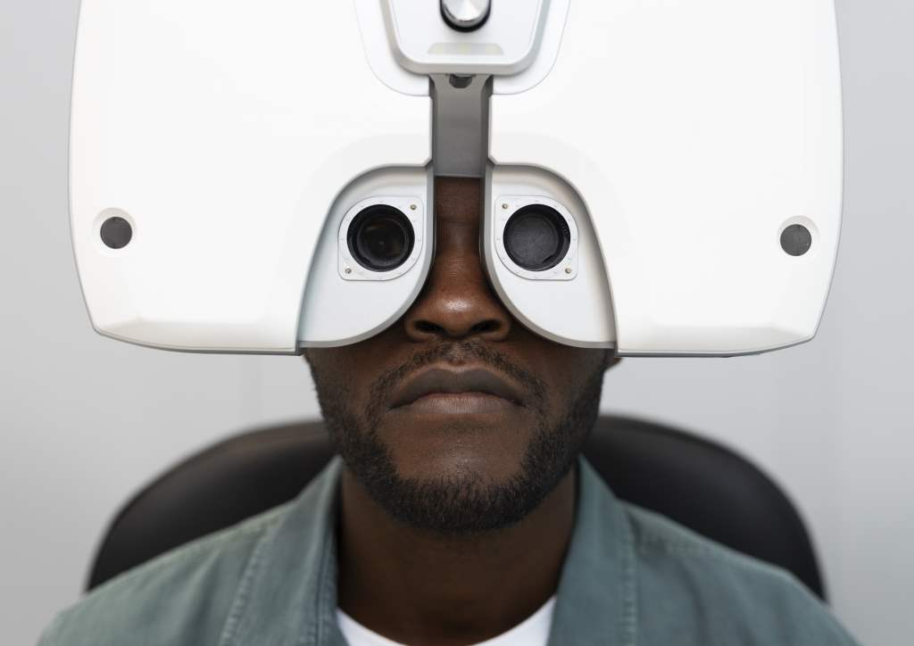

Why are you myopic and how can our professional optometric services help? We explain everything!
By 2050, half of humanity could be myopic, according to a study published in the journal Ophthalmology. Myopia is the most common visual defect and typically begins around age 6-8 before stabilising around 20-25 years. From any age, professional eye care is essential for maintaining clear vision.
The causes of myopia are both genetic and environmental. Recent studies suggest that a lack of natural light and outdoor activities during childhood is a contributing factor.
A myopic person loses sharpness progressively with distance. A myope has difficulty seeing far but sees well up close. The cause? An excessive growth of the eye that becomes too long, not in terms of a standard, but relative to the distance at which the anterior tissues of the eye (cornea and lens) focus light rays. As a result, the image is formed in front of the retina instead of on it.
The correction of myopia is achieved with precise corrective lenses or contact lenses. The goal is to redirect light to focus it perfectly on the retina, giving you sharp, effortless vision.
At Eye Clinic, we offer advanced clinical management for myopia, including specialised contact lens fittings and myopia control for children. Our comprehensive evaluations ensure your eyes remain healthy as well as clear.
Our optometrists use state-of-the-art diagnostic technology to monitor the health of your eyes. This is particularly important for high myopia, where regular retinal screening is essential.
We provide a range of solutions, from high-definition spectacle lenses to daily disposable contact lenses and myopia management lenses for younger patients.
Professional eye care is the key to maintaining a lifetime of good vision for those with myopia!
